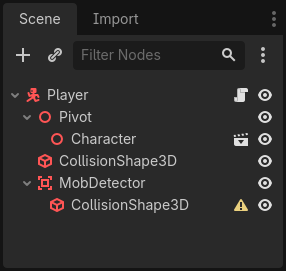
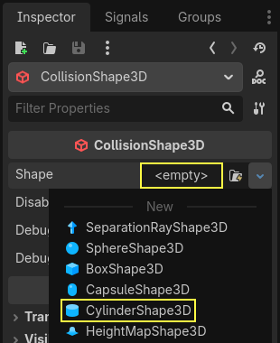
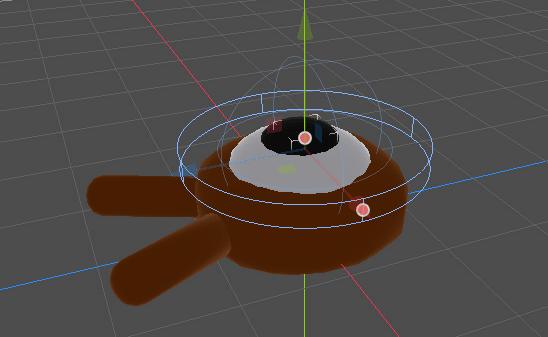
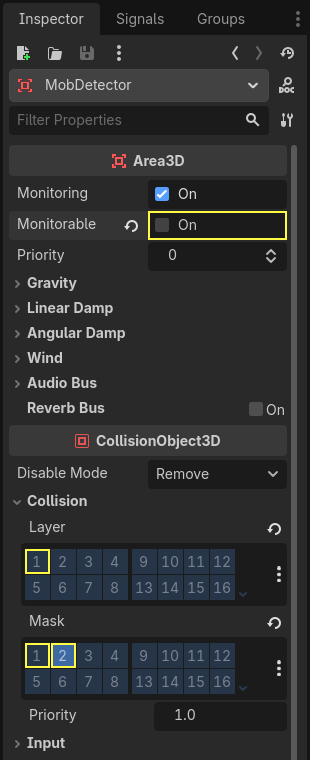
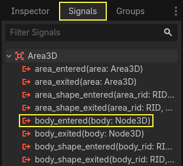
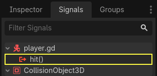

Killing the player
We can kill enemies by jumping on them, but the player still can't die. Let's fix this.
We want to detect being hit by an enemy differently from squashing them. We want the player to die when they're moving on the floor, but not if they're in the air. We could use vector math to distinguish the two kinds of collisions. Instead, though, we will use an Area3D node, which works well for hitboxes.
Hitbox with the Area node
Head back to the player.tscn scene and add a new child node Area3D. Name it
MobDetector
Add a CollisionShape3D node as a child of it.

In the Inspector, assign a cylinder shape to it.

Here is a trick you can use to make the collisions only happen when the player is on the ground or close to it. You can reduce the cylinder's height and move it up to the top of the character. This way, when the player jumps, the shape will be too high up for the enemies to collide with it.

You also want the cylinder to be wider than the sphere. This way, the player gets hit before colliding and being pushed on top of the monster's collision box.
The wider the cylinder, the more easily the player will get killed.
Next, select the MobDetector node again, and in the Inspector, turn
off its Monitorable property. This makes it so other physics nodes
cannot detect the area. The complementary Monitoring property allows
it to detect collisions. Then, remove the Collision -> Layer and set
the mask to the "enemies" layer.

When areas detect a collision, they emit signals. We're going to connect
one to the Player node. Select MobDetector and go to the Signals dock, double-click the
body_entered signal and connect it to the Player

The MobDetector will emit body_entered when a CharacterBody3D or a
RigidBody3D node enters it. As it only masks the "enemies" physics
layers, it will only detect the Mob nodes.
Code-wise, we're going to do two things: emit a signal we'll later use
to end the game and destroy the player. We can wrap these operations in
a die() function that helps us put a descriptive label on the code.
# Emitted when the player was hit by a mob.
# Put this at the top of the script.
signal hit
# And this function at the bottom.
func die():
hit.emit()
queue_free()
func _on_mob_detector_body_entered(body):
die()
// Don't forget to rebuild the project so the editor knows about the new signal.
// Emitted when the player was hit by a mob.
[Signal]
public delegate void HitEventHandler();
// ...
private void Die()
{
EmitSignal(SignalName.Hit);
QueueFree();
}
// We also specified this function name in PascalCase in the editor's connection window.
private void OnMobDetectorBodyEntered(Node3D body)
{
Die();
}
Ending the game
We can use the Player's hit signal to end the game. All we need
to do is connect it to the Main node and stop the MobTimer in
reaction.
Open main.tscn, select the Player node, and in the Signals dock,
connect its hit signal to the Main node.

Get the timer, and stop it, in the _on_player_hit() function.
func _on_player_hit():
$MobTimer.stop()
// We also specified this function name in PascalCase in the editor's connection window.
private void OnPlayerHit()
{
GetNode<Timer>("MobTimer").Stop();
}
If you try the game now, the monsters will stop spawning when you die, and the remaining ones will leave the screen.
Notice also that the game no longer crashes or displays an error when the player dies. Because
we are stopping the MobTimer, it no longer triggers the _on_mob_timer_timeout() function.
Also note that the enemy colliding with the player and dying depends on the size and position of the
Player and the Mob's collision shapes. You may need to move them
and resize them to achieve a tight game feel.
You can pat yourself on the back: you prototyped a complete 3D game, even if it's still a bit rough.
From there, we'll add a score, the option to retry the game, and you'll see how you can make the game feel much more alive with minimalistic animations.
Code checkpoint
Here are the complete scripts for the Main, Mob, and Player nodes,
for reference. You can use them to compare and check your code.
Starting with main.gd.
extends Node
@export var mob_scene: PackedScene
func _on_mob_timer_timeout():
# Create a new instance of the Mob scene.
var mob = mob_scene.instantiate()
# Choose a random location on the SpawnPath.
# We store the reference to the SpawnLocation node.
var mob_spawn_location = get_node("SpawnPath/SpawnLocation")
# And give it a random offset.
mob_spawn_location.progress_ratio = randf()
var player_position = $Player.position
mob.initialize(mob_spawn_location.position, player_position)
# Spawn the mob by adding it to the Main scene.
add_child(mob)
func _on_player_hit():
$MobTimer.stop()
using Godot;
public partial class Main : Node
{
[Export]
public PackedScene MobScene { get; set; }
private void OnMobTimerTimeout()
{
// Create a new instance of the Mob scene.
Mob mob = MobScene.Instantiate<Mob>();
// Choose a random location on the SpawnPath.
// We store the reference to the SpawnLocation node.
var mobSpawnLocation = GetNode<PathFollow3D>("SpawnPath/SpawnLocation");
// And give it a random offset.
mobSpawnLocation.ProgressRatio = GD.Randf();
Vector3 playerPosition = GetNode<Player>("Player").Position;
mob.Initialize(mobSpawnLocation.Position, playerPosition);
// Spawn the mob by adding it to the Main scene.
AddChild(mob);
}
private void OnPlayerHit()
{
GetNode<Timer>("MobTimer").Stop();
}
}
Next is mob.gd.
extends CharacterBody3D
# Minimum speed of the mob in meters per second.
@export var min_speed = 10.0
# Maximum speed of the mob in meters per second.
@export var max_speed = 18.0
# Emitted when the player jumped on the mob
signal squashed
func _physics_process(_delta):
move_and_slide()
# This function will be called from the Main scene.
func initialize(start_position, player_position):
# We position the mob by placing it at start_position
# and rotate it towards player_position, so it looks at the player.
look_at_from_position(start_position, player_position, Vector3.UP)
# Rotate this mob randomly within range of -45 and +45 degrees,
# so that it doesn't move directly towards the player.
rotate_y(randf_range(-PI / 4, PI / 4))
# We calculate a random speed (float)
var random_speed = randf_range(min_speed, max_speed)
# We calculate a forward velocity that represents the speed.
velocity = Vector3.FORWARD * random_speed
# We then rotate the velocity vector based on the mob's Y rotation
# in order to move in the direction the mob is looking.
velocity = velocity.rotated(Vector3.UP, rotation.y)
func _on_visible_on_screen_notifier_3d_screen_exited():
queue_free()
func squash():
squashed.emit()
queue_free() # Destroy this node
using Godot;
public partial class Mob : CharacterBody3D
{
// Emitted when the played jumped on the mob.
[Signal]
public delegate void SquashedEventHandler();
// Minimum speed of the mob in meters per second
[Export]
public float MinSpeed { get; set; } = 10.0f;
// Maximum speed of the mob in meters per second
[Export]
public float MaxSpeed { get; set; } = 18.0f;
public override void _PhysicsProcess(double delta)
{
MoveAndSlide();
}
// This function will be called from the Main scene.
public void Initialize(Vector3 startPosition, Vector3 playerPosition)
{
// We position the mob by placing it at startPosition
// and rotate it towards playerPosition, so it looks at the player.
LookAtFromPosition(startPosition, playerPosition, Vector3.Up);
// Rotate this mob randomly within range of -45 and +45 degrees,
// so that it doesn't move directly towards the player.
RotateY((float)GD.RandRange(-Mathf.Pi / 4.0, Mathf.Pi / 4.0));
// We calculate a random speed (float)
float randomSpeed = GD.RandRange(MinSpeed, MaxSpeed);
// We calculate a forward velocity that represents the speed.
Velocity = Vector3.Forward * randomSpeed;
// We then rotate the velocity vector based on the mob's Y rotation
// in order to move in the direction the mob is looking.
Velocity = Velocity.Rotated(Vector3.Up, Rotation.Y);
}
public void Squash()
{
EmitSignal(SignalName.Squashed);
QueueFree(); // Destroy this node
}
private void OnVisibilityNotifierScreenExited()
{
QueueFree();
}
}
Finally, the longest script, player.gd:
extends CharacterBody3D
signal hit
# How fast the player moves in meters per second
@export var speed = 14
# The downward acceleration while in the air, in meters per second squared.
@export var fall_acceleration = 75
# Vertical impulse applied to the character upon jumping in meters per second.
@export var jump_impulse = 20
# Vertical impulse applied to the character upon bouncing over a mob
# in meters per second.
@export var bounce_impulse = 16
var target_velocity = Vector3.ZERO
func _physics_process(delta):
# We create a local variable to store the input direction
var direction = Vector3.ZERO
# We check for each move input and update the direction accordingly
if Input.is_action_pressed("move_right"):
direction.x = direction.x + 1
if Input.is_action_pressed("move_left"):
direction.x = direction.x - 1
if Input.is_action_pressed("move_back"):
# Notice how we are working with the vector's x and z axes.
# In 3D, the XZ plane is the ground plane.
direction.z = direction.z + 1
if Input.is_action_pressed("move_forward"):
direction.z = direction.z - 1
# Prevent diagonal moving fast af
if direction != Vector3.ZERO:
direction = direction.normalized()
# Setting the basis property will affect the rotation of the node.
$Pivot.basis = Basis.looking_at(direction)
# Ground Velocity
target_velocity.x = direction.x * speed
target_velocity.z = direction.z * speed
# Vertical Velocity
if not is_on_floor(): # If in the air, fall towards the floor. Literally gravity
target_velocity.y = target_velocity.y - (fall_acceleration * delta)
# Jumping.
if is_on_floor() and Input.is_action_just_pressed("jump"):
target_velocity.y = jump_impulse
# Iterate through all collisions that occurred this frame
# in C this would be for(int i = 0; i < collisions.Count; i++)
for index in range(get_slide_collision_count()):
# We get one of the collisions with the player
var collision = get_slide_collision(index)
# If the collision is with ground
if collision.get_collider() == null:
continue
# If the collider is with a mob
if collision.get_collider().is_in_group("mob"):
var mob = collision.get_collider()
# we check that we are hitting it from above.
if Vector3.UP.dot(collision.get_normal()) > 0.1:
# If so, we squash it and bounce.
mob.squash()
target_velocity.y = bounce_impulse
# Prevent further duplicate calls.
break
# Moving the Character
velocity = target_velocity
move_and_slide()
# And this function at the bottom.
func die():
hit.emit()
queue_free()
func _on_mob_detector_body_entered(body):
die()
using Godot;
public partial class Player : CharacterBody3D
{
// Emitted when the player was hit by a mob.
[Signal]
public delegate void HitEventHandler();
// How fast the player moves in meters per second.
[Export]
public int Speed { get; set; } = 14;
// The downward acceleration when in the air, in meters per second squared.
[Export]
public int FallAcceleration { get; set; } = 75;
// Vertical impulse applied to the character upon jumping in meters per second.
[Export]
public int JumpImpulse { get; set; } = 20;
// Vertical impulse applied to the character upon bouncing over a mob in meters per second.
[Export]
public int BounceImpulse { get; set; } = 16;
private Vector3 _targetVelocity = Vector3.Zero;
public override void _PhysicsProcess(double delta)
{
// We create a local variable to store the input direction.
var direction = Vector3.Zero;
// We check for each move input and update the direction accordingly.
if (Input.IsActionPressed("move_right"))
{
direction.X += 1.0f;
}
if (Input.IsActionPressed("move_left"))
{
direction.X -= 1.0f;
}
if (Input.IsActionPressed("move_back"))
{
// Notice how we are working with the vector's X and Z axes.
// In 3D, the XZ plane is the ground plane.
direction.Z += 1.0f;
}
if (Input.IsActionPressed("move_forward"))
{
direction.Z -= 1.0f;
}
// Prevent diagonal moving fast af
if (direction != Vector3.Zero)
{
direction = direction.Normalized();
// Setting the basis property will affect the rotation of the node.
GetNode<Node3D>("Pivot").Basis = Basis.LookingAt(direction);
}
// Ground Velocity
_targetVelocity.X = direction.X * Speed;
_targetVelocity.Z = direction.Z * Speed;
// Vertical Velocity
if (!IsOnFloor()) // If in the air, fall towards the floor. Literally gravity
{
_targetVelocity.Y -= FallAcceleration * (float)delta;
}
// Jumping.
if (IsOnFloor() && Input.IsActionJustPressed("jump"))
{
_targetVelocity.Y = JumpImpulse;
}
// Iterate through all collisions that occurred this frame.
for (int index = 0; index < GetSlideCollisionCount(); index++)
{
// We get one of the collisions with the player.
KinematicCollision3D collision = GetSlideCollision(index);
// If the collision is with a mob.
if (collision.GetCollider() is Mob mob)
{
// We check that we are hitting it from above.
if (Vector3.Up.Dot(collision.GetNormal()) > 0.1f)
{
// If so, we squash it and bounce.
mob.Squash();
_targetVelocity.Y = BounceImpulse;
// Prevent further duplicate calls.
break;
}
}
}
// Moving the Character
Velocity = _targetVelocity;
MoveAndSlide();
}
private void Die()
{
EmitSignal(SignalName.Hit);
QueueFree();
}
private void OnMobDetectorBodyEntered(Node3D body)
{
Die();
}
}
See you in the next lesson to add the score and the retry option.